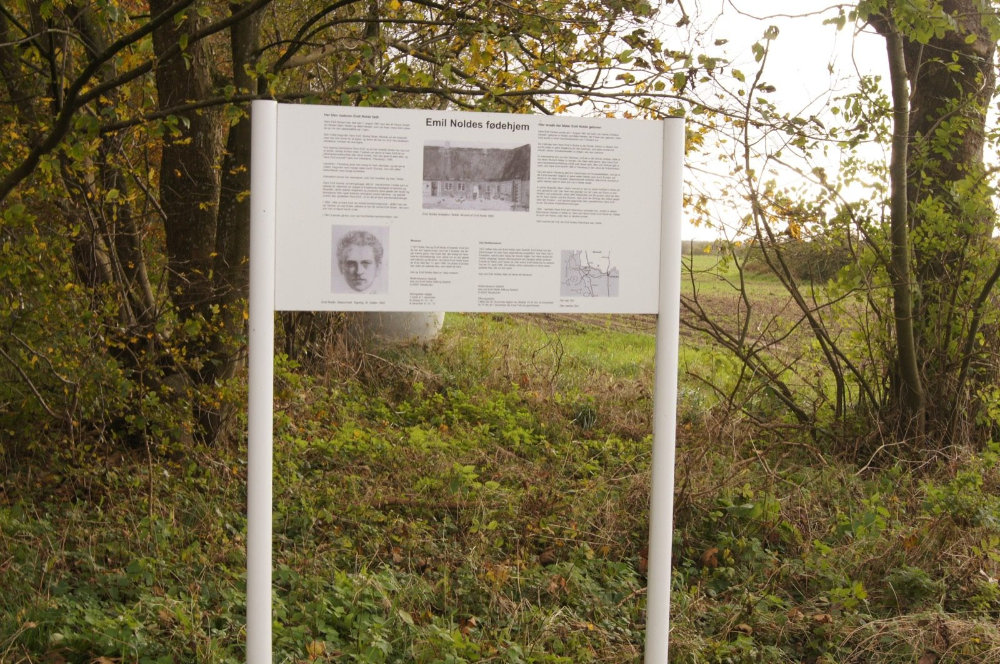

Kapitel 1 – Emil i Nolde
Nolde vokser op på en gård ude på landet i et udkantsområde mellem Danmark og Tyskland. Moren er kærlig og faren er streng og barndommen forløber temmelig almindeligt indtil Nolde kommer i puberteten: han bliver meget indadvendt. Selvom han værdsætter det traditionsbundne liv på landet, længes han kun efter at komme væk.